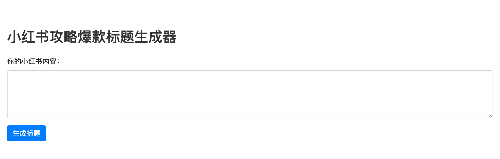

P02 / CONTENT ANALYTICS × GENAI
From content performance signals
to headline options.
A Hong Kong food-content project on RED: using engagement signals to select examples, then translating their characteristics into a headline-generation prototype.
QUESTION Can content analysis become a usable, testable solution?
My contribution: post-collection data work, analysis and the generator. Collection by other group members.
01 / WHAT THE REFERENCES SHOWED
ARCHIVED EVIDENCEPlace, feeling and practical detail
gave the prompts concrete material.
The project selected high-like/high-save examples for prompting. Three recurring characteristics in the retained references translated into useful constraints for headline variation.
Place made the content specific.
Hong Kong, neighbourhoods and an MTR-station location appeared in the prompt references.
Include useful location context when the source content supplies it.
Personal reactions shaped the hook.
Selected headlines used enthusiastic reactions to food and dining experiences.
Allow restrained emotional framing without adding unsupported claims.
Details gave the reader a use case.
References included a 48-hour itinerary, budget information and food-stop details.
Surface useful trip, place or value information already present in the input.
Original deck: high-like/high-save selection criteria. Retained prompt pairs: qualitative examples. Rule wording is a current synthesis of the observations, not a claim that every archived draft followed it.
Decision → Turn observed characteristics into candidate variations to test—not causal “drivers of engagement”.
02 / WHAT THE PROTOTYPE PRODUCED
ARCHIVED OUTPUT · SLIDE 18One food review.
Different headline angles.
The same boat-noodle review produced dish-led, location-led and reaction-led wording. These are real archived drafts—not newly generated examples.
A Thai-restaurant review in Kwun Tong, describing boat noodles and the dining experience.
↓- DISH-LED
“Thai boat noodles that taste great.”
The dish becomes the headline’s subject.
- LOCATION-LED
“I didn’t expect beef boat noodles this good in Kwun Tong.”
The supplied place gives the option a local angle.
- REACTION-LED
“This bowl of boat noodles—I love it!”
An emotional reaction changes the framing.
Faithful English translations of three of the five generated titles on slide 18; emojis omitted. Labels are current annotations of the archived wording. No variant has a verified performance advantage.
03 / A USABLE PROTOTYPE
ORIGINAL INTERFACEA real input form.
Five draft headlines to review.

Content / context
The user enters source content.
Examples + constraints
Few-shot references and guidance on relevance, brevity and factual consistency.
5 draft variants
The retained generator defaults to five titles. Flask connects the form to generation.
What was built → A GPT-3.5 prompt-based headline generator with a Flask + HTML interface. The form turned prompt logic into something a user could try and review. This historical service is not running in the portfolio.
SO WHAT / PRODUCT DECISION
Turn content cues into options
a person can compare.
The prototype made variation tangible: one input, several candidate headlines. The next decision is which drafts are relevant and factually sound enough to enter a controlled audience test.
EVALUATION / NEXT TEST
One archived draft introduced “20 per person” although its input supplied no price. Verify or remove unsupported details before testing.
Slide 17 · One example, not an error rateExperiment status
The original deck proposes online A/B testing under “Further Improvement”. No verified participant results, exposure logs or measured uplift were recovered. A factuality/relevance review followed by a controlled comparison is the next step, not a completed experiment.
WHAT THIS DEMONSTRATES
Content Analytics · Metric Thinking · Pattern Recognition · Experiment Design* · GenAI Prototyping
*Proposed test design; no completed experiment result claimed.METHODS / PROVENANCE / LIMITATIONS
What the data and code establish
Retained data contain topic, title, content and captured likes, saves, comments and shares. The presentation documents cleaning, duplicate removal and sorting by likes. Repeated post IDs across topic captures mean retained rows should not be treated as unique posts without reconciliation.
Prompt examples contain location references, emotional wording, itineraries and practical details. These provide hypotheses for variation, not quantified population-level patterns. The notebooks and Flask source retain different prompt iterations; feedback flags irrelevant tags, repetition and incorrect details. No consistent automated factuality check is established.
The historical API used a third-party provider. The portfolio does not call that service or distribute credential-bearing historical code. Raw posts and author identifiers remain private.
Contribution and evidence sources
Originally completed as a CityU COM5508 group project. I was responsible for all data work after collection, including cleaning and analysis, and for the generator. Data collection was handled by other group members; the presentation was a shared deliverable.
Evidence: original Group 2 presentation, slides 6–7, 10–17 and 22; retained content datasets, prompt notebooks and Flask source. This page distinguishes original artifacts from current analytical interpretation. No invented screenshots, generated examples or experiment results are used.